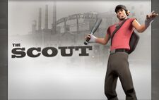
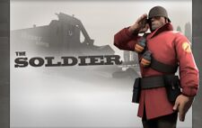
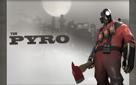

The Scout
- The Scout is arguably the most mobile class in the game, possessing both high movement speed and a double jump.
- While the Scout can be effective fighting solely at the front, his low health makes him easilly killed by concentrated enemy fire.
- Instead, to be most effective, a Scout player should utilize his high speed to dodge enemy attacks, throw off their aim, and flank.
- Strong Scouts are nearly unbeatable in one on one fights, so forcing them to occur as much as possible is beneficial.
- Additionally, Scouts are effective and both chasing down weak enemies and out vulernable enemies such as Medics or Snipers.


The Soldier
- Having the second highest health in the game, the Soldier can fight longer without needing to fall back.
- The Soldier's rockets are very powerful, ideal for taking out enemy buildings or other targets at a distance.
- Banners such as the Batallion's Backup can be used to give powerful buffs to nearby teammates, turning the tide of battle.
- Despite a slow foot speed, his famous ability to rocket jump - firing a rocket at one's feet - gives him very high mobility.
- Many Soldiers use the Gunboats - an unlockable weapon that greatly reduces damage taken from rocket jumping, giving even more manuverability.


The Pyro
- The Pyro has a good mix of mobility and survivability: It has the third highest health and several items that help with movement.
- In order to compensate for not having many long range options, the Pyro specializes in surprise, close range attacks
- The Flamethrower is not only good for damage, its Airblast function allows the Pyro to both extinguish allies and reflect enemy projectiles.
- The reflection mechanic makes the Pyro very good at fighting enemy Soldiers and Demomen. Skilled players can deny the enemy a single hit.
- The Pyro can also fulfil a supportive role by protecting friendly Engineer buildings from enemy Spies and from classes firing projectiles from afar.